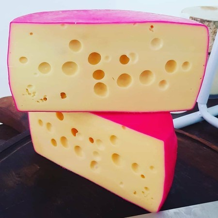

O Gouda é um queijo semiduro originário da Holanda, conhecido por sua cor amarela suave e sabor delicado com notas de nozes. É um dos queijos mais consumidos no mundo.
Este queijo é caracterizado por sua textura cremosa e flexível, o que o torna ideal para fatiar e derreter. É frequentemente utilizado em sanduíches, fondues e pratos gratinados.
O processo de fabricação do queijo Gouda envolve a coagulação do leite, formação da coalhada, prensagem e maturação por semanas ou meses, dependendo do tipo desejado. Isso contribui para seu sabor suave e desenvolvimento de textura.
Experimente o Gouda em diferentes preparações culinárias para apreciar sua versatilidade e sabor único que agrada a diversos paladares ao redor do mundo.